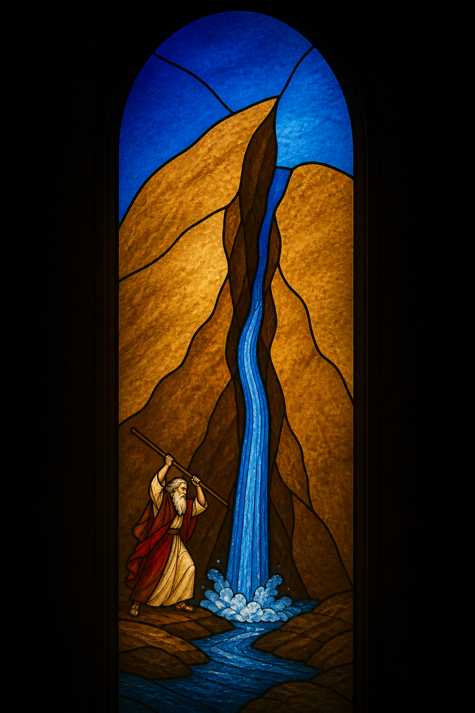
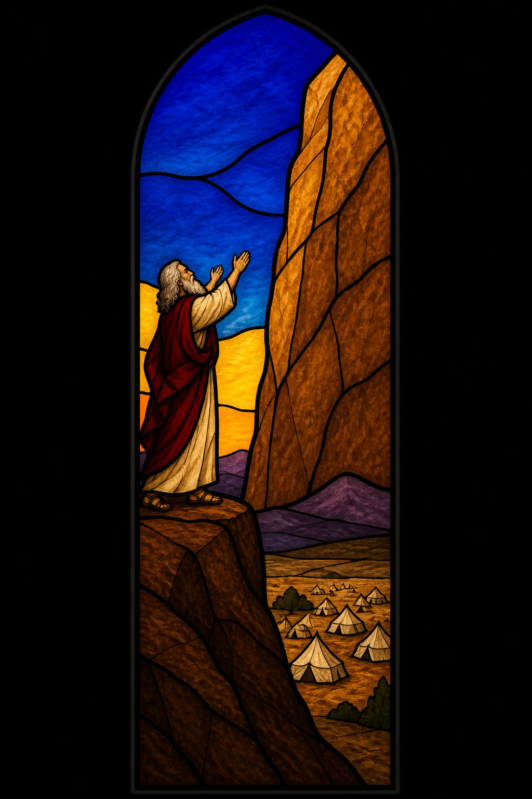
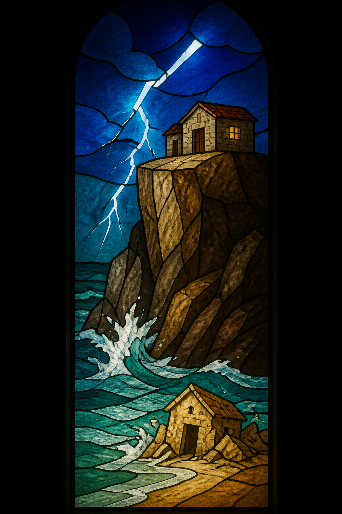
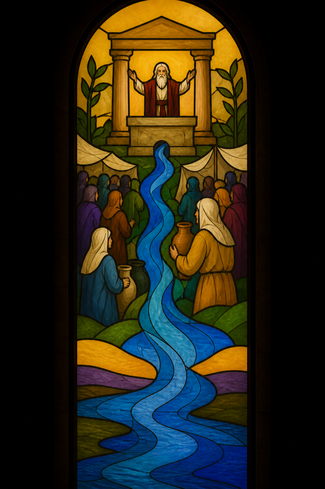

Biblical Imagery
The Rock
Isaiah 26:4 · ESV
Trust in the LORD forever, for the LORD GOD is an everlasting rock.

1
Water from the Rock
Exodus 17:1–7
- What did Israel need that only God could give from a rock?
- How does Paul later name this Rock (1 Cor 10:4)?

2
The LORD Is the Rock
Deuteronomy 32:4; 2 Samuel 22:2
- What does it mean that God's work is perfect as the Rock (Deut 32:4)?
- Where does David run when enemies press him (2 Sam 22)?

3
House on the Rock
Matthew 7:24–27
- What is the difference between hearing Jesus and doing what he says?
- Why does the house on the rock stand when the storm comes?

4
Living Water from the Rock
John 7:37–39; Ezekiel 47:1
- What did Jesus promise on the last day of the feast (John 7)?
- Where does Ezekiel's vision show water beginning to flow?